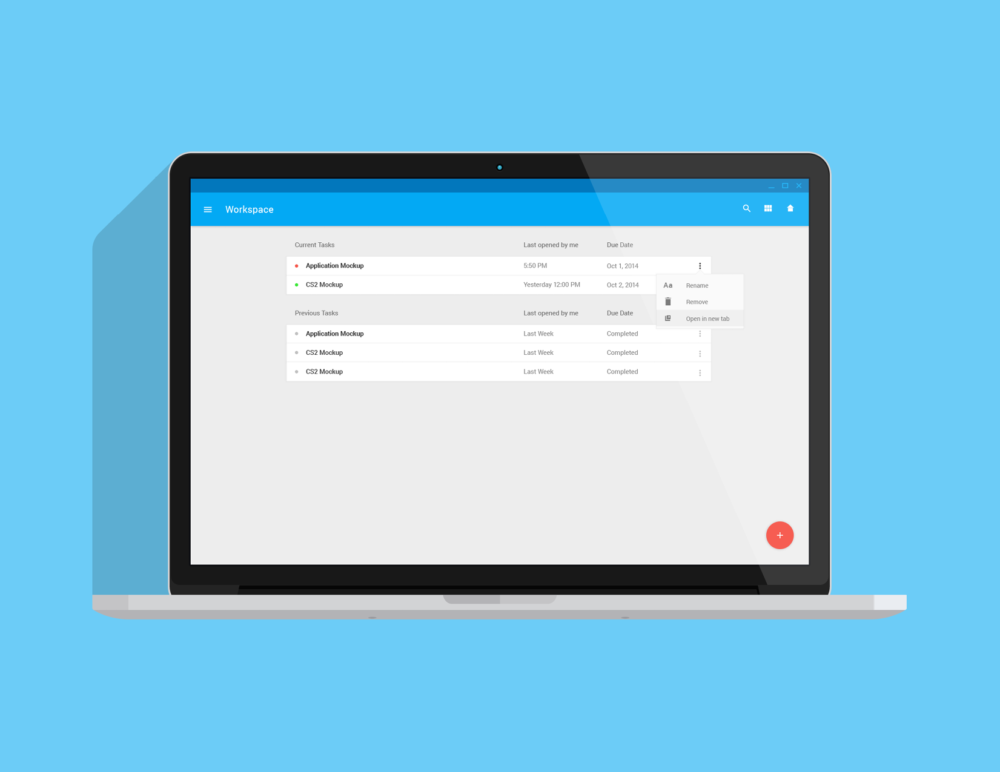

It allows users to create multiple "workspaces" for each of their tasks and organize applications normally used between work and play. Each space acts as a platform that regulates the number of applications open on a desktop. It allows users to select which specific apps to run at once, streamlining the multitasking experience. This motivates users to finish their tasks with minimal distraction through the use of a time out feature on applications that are not work related.
I based the design off of the functionality of Google Docs and the aesthetic appeal of Material Design to incorporate conventions people are comfortable using.


Initial sketch detailing the division of resources, priorities and distraction. The user flow was based off the usability of Google Docs.
